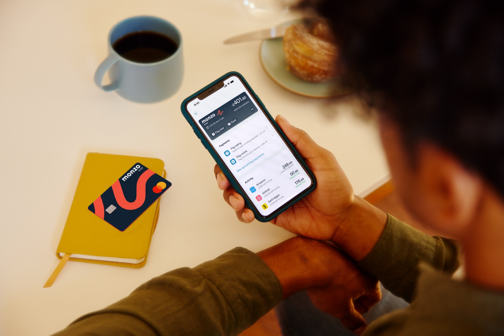

“What do I owe?” came before individual purchases.
Customers needed their total balance and monthly commitments together, without assembling the picture themselves.
I led design across two squads to connect a clearer credit-card proposition with an account experience customers could understand and control.

Flex launched in 2021 with a credit limit and individual instalment plans. Customers could use it to spread purchases, including transactions moved from their Monzo current account. But its positioning and experience still felt closer to buy now, pay later than an everyday credit card.
By early 2023, acquisition was 15% behind plan and NPS was falling. In February, I joined Flex full-time with a five-month mandate to help land a new vision. I took on design across the Growth and Core squads, connecting how we explained the product with how people actually managed it.
How could we make Flex feel like one understandable credit account, while keeping the control customers valued over individual purchases?
The team’s targets were ambitious: 700,000 customers by year end, average monthly spend growing from £200 to £400, and active usage rising from 47% to 60%. These were business targets, rather than measured results of the redesign.
I audited the journey from entry points and sign-up through to repayment, then brought stakeholder feedback, existing research and product data together with our researcher and data scientist.
With our part-time researcher, I worked on 20 customer interviews. A consistent tension emerged: the interface organised debt around purchases, while customers wanted to understand and manage their account as a whole.
Customers needed their total balance and monthly commitments together, without assembling the picture themselves.
37% of customers had more than ten active purchases. Changing repayment plans one by one made an account-wide decision cumbersome.
Customers wanted a default that matched how they intended to use their card.
The audit also exposed misleading expectations. “Pay off extra” sounded like an account-level action, but the journey asked customers to select a purchase first. This was a problem with the model as much as the wording.
I shaped a card-led vision around account-level visibility, straightforward repayment and reusable card defaults. Rather than add every requested capability, I focused the first release on making the core credit experience understandable.
Choose a transaction → inspect its plan → repeat for the next purchase.
Understand the balance and monthly payment → act → inspect purchases when needed.
A summary of the information model, rather than a reproduction of the interface.
In parallel, I worked with marketing on credit-card framing, entry points and sign-up. We tested whether clearer positioning could help customers recognise what Flex offered. This acquisition work informed the proposition; it was a separate experiment stream from the account redesign.
The squads did not initially agree on what should come first: migrating to Monzo’s shared app framework, fixing payments, or splitting the vision into smaller phases. I facilitated a prioritisation workshop, comparing ideas against the vision, business impact and engineering effort.
Move onto the shared app foundation before rebuilding the experience on top of it.
Reduce repeated decisions and support the everyday-card proposition.
Deliver account-level repayment, then introduce more complex monthly-payment editing.
I connected the customer problem to delivery constraints and helped both squads agree what to do first. The value of the vision was the decisions it enabled, as well as the screens it described.
Engineering discussions revealed that combining these actions required complex changes to payment allocation. I separated the journeys and phased monthly-payment editing, so we could improve repayment without waiting for the entire algorithm to change.
An extra payment could reduce the duration of debt without covering the next scheduled monthly payment. I made that distinction explicit in the repayment journey. Removing a tap was less valuable than helping someone understand what would happen to their money.
Utilisation information was initially outside the release scope. I spoke with other teams about reusing progress-bar work, making the case for including a clearer view of credit usage without treating it as a wholly new build.
Early testing supported the new structure, but the payment journeys still presented too much information. I reduced the scope, removing ideas such as rewards and richer insights from the immediate experience, and simplified the paths around customers’ tasks.
In subsequent task-based usability testing, participants generally completed the journeys without assistance. The remaining confusion pointed to two specific areas: explaining card defaults and making the consequences of payment choices clearer.
I worked through edge cases with engineers rather than leaving them as implementation details. Different account states—new, active and in arrears—needed different emphasis, while keeping the same underlying account model.
Balance, payment information and purchase progress were brought into one clearer structure, with explicit payment subheadings. This reduced reliance on a separate management area that 40% of customers had not visited.
The pay-balance flow showed remaining debt, interest savings and what would happen to the next payment. Monthly-payment editing followed in a later phase, with visibility of future payments and interest implications.
Customers could set a repayment preference during sign-up rather than decide for every purchase. The available choices balanced usability with commercial constraints.
Suggested actions during the first 30 days introduced the physical card, moving an existing purchase and adding the card to a digital wallet.
The work connected acquisition, onboarding and account management around one product story. Both squads had a shared direction and a phased route to delivery, instead of treating the framework migration and customer improvements as separate ambitions.
The positioning experiments reported higher account creation than their controls. These findings supported the proposition change; they do not measure the impact of the whole redesign.
My project retrospective records that the team exceeded its business goals and saw reductions in arrears and support contacts. These were shared outcomes across the product work.
Measurement note: exact post-launch figures and the reporting window are not included in this case study. Acquisition experiments and wider launch outcomes are presented separately.
This project reinforced that a product vision has to survive contact with payment rules, engineering capacity and commercial constraints. My role was to keep the customer model coherent while helping the teams make practical choices.
I would bring the future-payment view into planning earlier. Monthly-payment editing shipped in stages, with that visibility added later; planning the dependencies sooner would have made the trade-off clearer from the start.
I also learned to challenge the boundary between design-system consistency and financial clarity. Reusing a component is useful when it helps customers understand their account. Where it does not, the underlying need has to remain visible in the discussion.